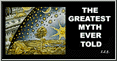
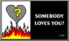

[ UFOs and Religion | The God of
the Bible | Anti-Tracts! ]
[ Objectivism and Freethought | News
From the Front ]
"And for this cause God shall send them strong delusion, that they should believe a lie: That they all might be damned -- 2 Thessalonians 2:11-12
[ UFOs and Religion | The God of
the Bible | Anti-Tracts! ]
[ Objectivism and Freethought | News
From the Front ]
UFOs in the Bible
Are UFOs a recent phenomena or have they been with us since ancient
times? Here are some of the many documented extraterrestrial encounters
contained in the "Word of God."
The Immaculate Deception
Learn the TRUTH about the connection between UFOs, Aliens, Angels,
Demons and Religion. Wake up and smell the burning coffee, the end is just
around the corner.
Not for the faint of heart.
Don't Trust This Face!
Extraterrestrial aliens are popping up everywhere! Learn the hidden
mysteries they don't talk about in Church or on TV.
Independence Day or "The Rapture?"
The secrets behind the coming "rapture" and why God has declared war
on humanity.
The Tower of Babel
The covert battle between mankind and the extraterrestrial watchers
we have come to call "GOD" and how humanity is kept from becoming a threat
to these "gods."
Jesus of Borg
The New Jerusalem: The kingdom of heaven EXPOSED! Is this what you
would call "heaven?"
Sex in God's Word
Some of the numerous sexually explicit stories and references which
God deemed important to include in his Word to his earthly children.
The Bloody Bible
Examples of God's true nature straight from the good book.
What Jesus Would Do "What Would Jesus Do?" Now you can finally answer for yourself. Learn to apply the teachings and example of Jesus to everyday situations!
A Really Scary Story A Halloween party becomes the scene for a child's nightmare. Great for stuffing little trick or treater's bags on All Hallow's Eve!
The Only Sinless Man? Did Jesus really live a sinless life? Some of the many examples of Jesus' hypocritical behavior are exposed in this popular tract.
Biblical Family Values What kind of family values does the Bible REALLY teach? Take a look for yourself!
Something Fishy What's the real story behind the fish emblem Christians put on the back of their cars? Not for the kiddies, this tract tells the HOLE story.
Playing Favorites Does God love all his children equally? This tract exposes the blatant favoritism which is the very foundation of Christianity.
The Greatest Myth Ever Told Many of the pagan origins and occult connections of the Christmas Nativity are revealed in this seasonal tract. Great for family Christmas gatherings!
Somebody
Loves You? A parody of the classic Jack Chick tract. Tells the straight
story about God's love.
 News
From the Front
News
From the FrontSITREP
The latest activities, devivals, Bible burnings, and EndTimes updates
from the frontlines of the battle for the minds of humanity.
LINKS
Our collection of favorite sites.

 Share
your testimony with our friendly counselors.
Share
your testimony with our friendly counselors.
Email the Front at: llfptfu@yahoo.com
Rev. Lou Siffer -- Senior Pastor
Rev. Bill Z. Bubb -- Associate Pastor